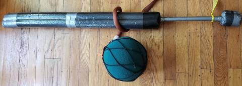

If not, construction tips are at *link not available yet*
You are free to play however you want, but below are the official rules!
They may seem long, but this is mostly because they deal with a lot of edge cases and safety. You can always start it off with 1v1 sparring and your own minigames if you don't have a full team for games!
Note: page still under construction
How to Hit People with Sticks
90% of the game is commiting fun little acts of violence against the opposing team, using foam
weapons. There is no minimum force required, so literally a tap counts as a hit - you don't need
to hit hard! (in fact, hitting hard is discouraged).
Here, you can see in green what parts count as a hit; red means they do NOT count:

Note that getting hit with pommels, the middle of the staff, shields, or rope does NOT count
(for safety and fairness reasons).
Additionally, head and neck shots do NOT count (to encourage safer play), and hands don't either
(mostly to keep the game more fun). You should call out head or hand to let the other player
know.
After a head or neck shot, the stick is not "live" (can't make hits) against the hit player
until the stick is off the head/neck (in Colorado you actually have to also take a step back).
If you were hit in the head/neck, then a nonneck/head part
without lifting the stick, the hit would NOT count.
For two handed weapons (Qtip, staff, and longsword), a hit only counts if the hitter had two
hands on the weapon during the hit; also, staff users must be holding the middle handle for it
to count
(otherwise they'd have quite a long reach, and plus they'd look a little silly).
Also, if your hand comes off the weapon, the hand is now a valid hit zone.
Lastly, at player's discretion, they can call double when both players hit each other and it is
unsure who hit first.
How to Hit People with Chains
In addition to the above rules applying to chains (no min force, head, neck, and hand shots not
counting, doubles), there are a couple final quirky deals with the chain.
One is that the hand does count as a hit at any time.
Another is if the ball is "wrapped," which means it has spun around a weapon 360 degrees, then
the ball is not "live", which means getting hit with a "wrapped" ball does not count. A wrap:

Stick weapons wrapping the ball are still "live", except in Arizona, because the folk there do
their own thing. Obviously, don't continue running around with the wrapped stick
if the chain is, for example, also wrapped around someone's neck (again, don't be reckless when
you play!)
Additionally, if the chain wraps a player, this counts as a chain hit, even if the ball does not
actually touch the player.
Lastly, "downed", aka players that have been legally hit must allow chain players to untangle
their chain once they are hit.
If a player is hit, then the ball wraps their weapon, they must drop their weapon to allow the
chain player to untangle the chain.
Rule of thumb here is always "don't be a schmuck - be nice or you suck" ;)
Full Game Summary
If you feel like you've had enough of sparring and want the full experience, there are the 5v5
games, played by two teams of 5! They play on a field of 40m x 20m, which looks like:
The two teams line up on opposite sides, and try to get the center ball (also called skull or
jug) into the other side's goal (like football, both American and international).
4 "enforcers" can choose a weapon (note there is a limit of 1 chain per team), and 1 "quick"
will be unarmed - the quick is the only one who can grab the ball.
The enforcers' job is to help the quick acquire the skull, then escort the quick into the goal.
They can do so by downing enemy players, who take a knee for a period of time after being hit,
or by outmaneuvering the enemy team.
To get a more complete description of the game, take a look at Scoring,
Downing, and Pinning!
Scoring
Only quicks can score, and they must have at least one hand on the skull as they put it in the
goal (no throwing into the goal, sorry basketball fans).
Also, downed quicks must release the skull, and cannot score (if the skull lands in the goal
after they're downed, then the skull should be removed from the goal).
This is pretty much it, except for some Colorado and Arizona specific rules:
In Colorado, there is "honeypotting", which means that if a quick brings the skull into the
goal, but another
quick is touching the inside of the goal, then there's no score.
In Arizona, if a quick is defending a goal, then they can't block the goal with a
bodypart.
If you are elsewhere, it is up to you and who you play with, so have fun!
Downing
If you've successfully committed your act of violence against an enemy player (as described in
How to Hit People 101 and 102), congratulations!
You have now downed them, and they will have to take a knee for 5 "stones" (7.5 seconds) if you
hit them with a stick, or 8 "stones" (12 seconds) if you hit them with a ball.
Once a player is "downed", they must immediately drop their weapon, put one knee on the ground,
put one hand on their back with how many stones they've been downed for. They cannot start
counting until they do so, but may switch knees/hands and rotate while downed.
If they violate these rules on purpose, you may continuously hit them and/or contact your local
referee and file a complaint.
FYI, 1 stone is 1.5 seconds (don't ask me why, I didn't make the rules, probably just sounds
better
to have a drum count go off every 1.5 secs instead of 1).
In addition, any player who goes out of bounds (unless you are a quick retrieving an out of
bounds skull) must go down for 5 stones.
Pinning
If you put your weapon on a downed player, they must stay down (and are "pinned"). However, their
count is not
reset, so as soon as you lift your weapon, they can immediately get up if they finished their
count.
However, this also means they can be hit as soon as they are not downed (they lift
their knee, pick up their weapon, or take a hand off their back), in which case they are downed
again.
Double shorts are the only players who can "double pin", ie: pin two players.
*Not sure if I'm forgetting more rules, this is a todo for the site creator*
Tournaments
If you ever decide to go to a tournament, you are allowed to have the following number of people
on your team:
5 to 8 (Arizona)
5 to 10 (Colorado)
Any other location, you should consult the organizers. If you go above this number, you will
have to
split up your team, or some people can't play!